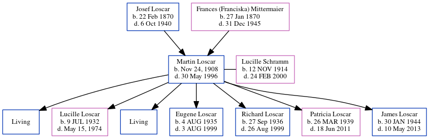

Martin J Loscar 1908 - 1996
[ Home ] | [ Calendar ] | [ Surnames Index ] | [ Census Index ] | [ Family History ]The child of Josef Loscar (a hatmaker) and Frances (Franciska) Mittermaier, Martin Loscar, the great-uncle of Michele Copp (née Phillips), was born in Essen, Germany in Nov 24, 19081,2 and married Lucille Schramm (with whom he had 7 children: Martin, Lucille, Edward, Eugene Louis, Richard, Patricia and James H., along with 2 surviving children) in 1930.
During his life, he was living in Fairfax, Tucker, West Virginia, USA in 19204; in Pittsburgh, Allegheny, Pennsylvania in 19301; in Pittsburgh, Pennsylvania, USA in 19345; in Pittsburgh in 19356; in Wexford, Allegheny, Pennsylvania in 19407; in West View, Allegheny, Pennsylvania in 19508; in Pennsylvania before 19519; in Wexford, Pennsylvania, USA from 1995 to 199810; in Germany11; and in Marshall Twp3. In 1915 he traveled from Rotterdam with his children: Lucille, Eugene Louis, Richard, Patricia and James H.
He died on May 30, 1996 in Wexford, Allegheny, Pennsylvania2,3 and was buried in Pine Township, Allegheny County, Pennsylvania after May 30, 19962.
Parents
- Josef was born on Feb 22, 1870
- Frances (Franciska) was born on Jan 27, 1870
Children
- Lucille was born on Jul 9, 1932
- Eugene Louis was born on Aug 4, 1935
- Richard was born on Sep 27, 1936
- Patricia was born on Mar 26, 1939
- James H. was born on Jan 30, 1944
Citations
- 1930 United States Federal Census Online publication - Provo, UT, USA: MyFamily.com, Inc., 2002.Original data - United States of America, Bureau of the Census. Fifteenth Census of the United States, 1930. Washington, D.C.: National Archives and Records Administration, 1930. T626, 2,667 rol
- U.S., Find A Grave Index, 1600s-Current Ancestry.com Operations, Inc.
- Newspapers.com Obituary Index, 1800s-current Ancestry.com Operations Inc
- 1920 United States Federal Census Online publication - Provo, UT, USA: MyFamily.com, Inc., 2005. For details on the contents of the film numbers, visit the following NARA web page: NARA. Note: Enumeration Districts 819-839 on roll 323 (Chicago City.Original data - United States of America
- U.S., City Directories, 1822-1995 Ancestry.com Operations, Inc. (Original sources vary according to directory. The title of the specific directory being viewed is listed at the top of the image viewer page. Check the directory title page image for full title and publication information.)
- 1940 United States Federal Census Ancestry.com Operations, Inc.
- U.S., World War II Draft Cards Young Men, 1940-1947 Ancestry.com Operations, Inc. ( View Sources.)
- 1950 United States Federal Census Ancestry.com Operations, Inc. (Department of Commerce. Bureau of the Census. 1913-1/1/1972. Population Schedules for the 1950 Census, 1950 - 1950. Washington, DC: National Archives at Washington, DC. Population Schedules for the 1950 Census, 1950 - 1950. NAID: 43290879. Records of the Bureau of the Census, 1790 - 2007, Record Group 29. National Archives at Washington, DC., Washington, DC.)
- U.S., Social Security Death Index, 1935-2014 Ancestry.com Operations Inc (Social Security Administration. Social Security Death Index, Master File. Social Security Administration.)
- U.S., Phone and Address Directories, 1993-2002 Ancestry.com Operations Inc (1993-2002 White Pages. Little Rock, AR, USA: Acxiom Corporation.)
- New York Passenger Lists, 1820-1957 Online publication - Provo, UT, USA: The Generations Network, Inc., 2006.Original data - Passenger Lists of Vessels Arriving at New York, New York, 1820-1897; (National Archives Microfilm Publication M237, 675 rolls); Records of the U.S. Customs Service, R
Family Tree
Generated by ged2site. Last updated on Jun 6, 2024